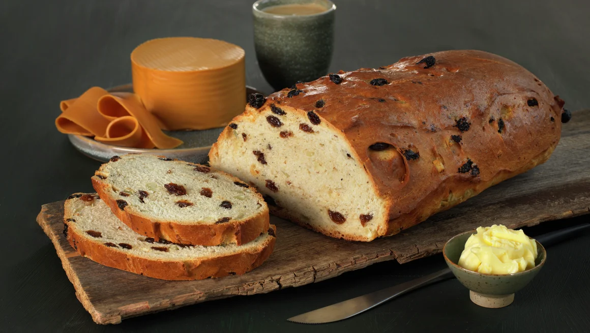

Julekake★
 12
servings
12
servings 3
hours
3
hours Source
Source Vegan
Vegan

950 gall-purpose flour150 gwhite sugar5 mlwhole milk2¼ tspinstant yeast2 tspcardemom1 tspsalt1egg1 tspvanilla extract175 gbutter at room temperature in cubes200 graisins1egg for brushing
Place everything except the butter, second egg and raisins in the kitchen machine with the dough hook on medium for 10 minutes.
Add the cubes of butter and let it run for another 10 minutes.
Add the raisins to the dough until they’re incorporated (but not too long).
Set aside and cover with some plastic and a kitchen towel for 1 hour to rise until double in size.
Cut into 2 and shape into a round bread Put on a baking sheet.
> Cover and let rise for another 1 hour, until double in size.
Brush with beaten egg.
Put oven on 200 celsius (400 fahrenheit) and bake for 40 minutes.
Let them cool and enjoy!